エステ・リラクゼーション・整体の方へ施術者育成スクール
力じゃなく、
ほぐす技術で
選ばれる施術者に。
院長歴14年の手技を、見立てから姿勢づくりまで。
未経験の方も、いろはから学べます。
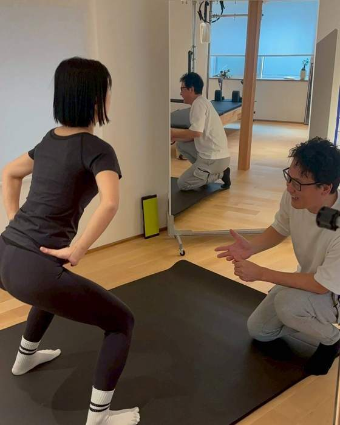
1まず、体を見る
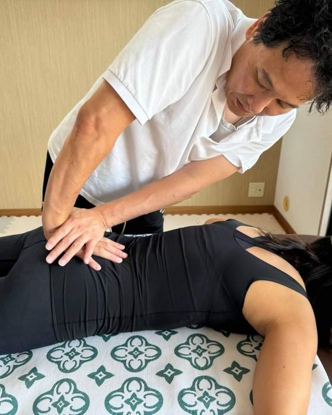
2手でほぐす
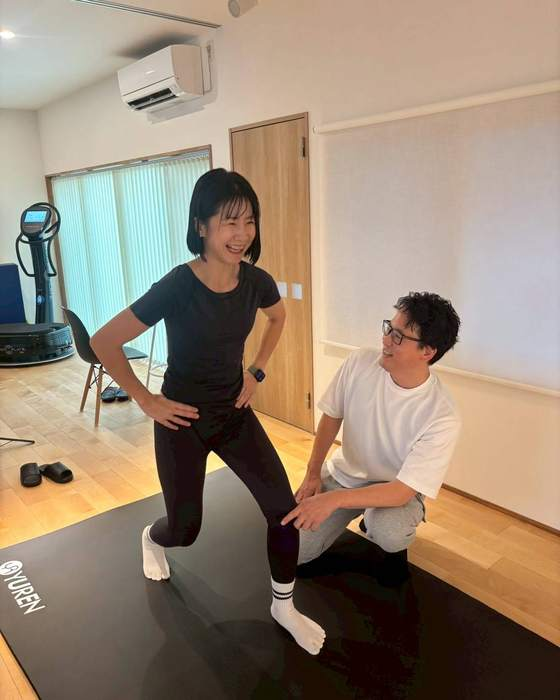
3姿勢を整える
院長歴
14年
専門学校
元校長
未経験から
受講OK
いろは整体スクール3つの強み
- 現場直伝！整体院の院長14年
- 教えるプロ！専門学校で元校長
- 力いらず！ほぐすメソッド3ステップ
- 3か月待ちの整体院をつくった手技を、そのまま
- 未経験の学生を教えてきた順番で、つまずかずに
- 見る・ほぐす・整えるの3つだけを、確実に
こんなお悩み、ありませんか？
ひとつでも当てはまったら、整体ほぐしメソッドが力になります。
-
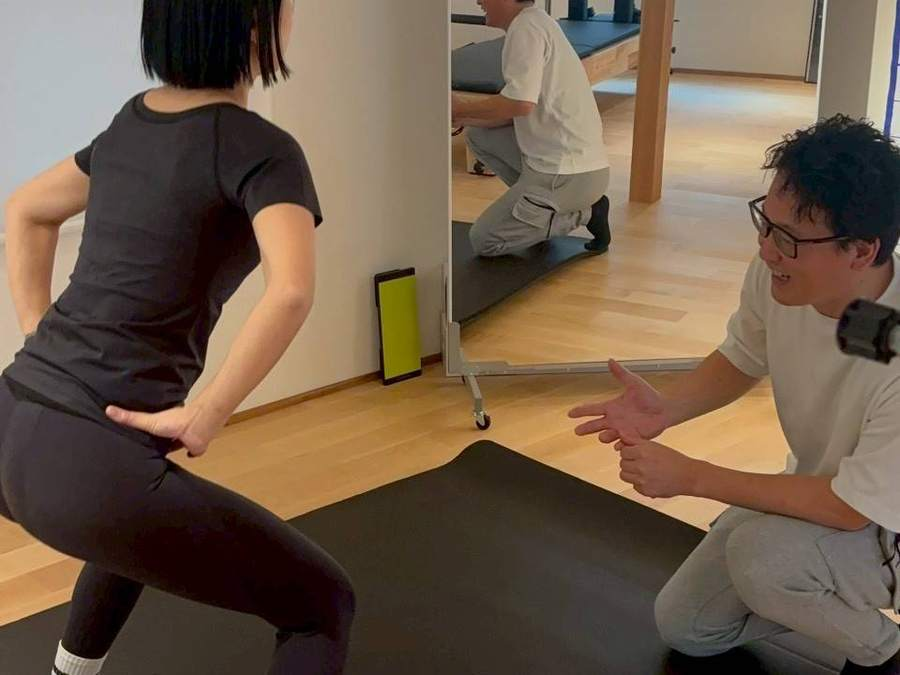
お悩みほぐして終わりで、次の来店につながらない
解決姿勢まで見るから、通う理由を伝えられる
施術の前に体を見立て、終わったあとに変化を一緒に確かめる。お客さまに説明できる施術になります。
-
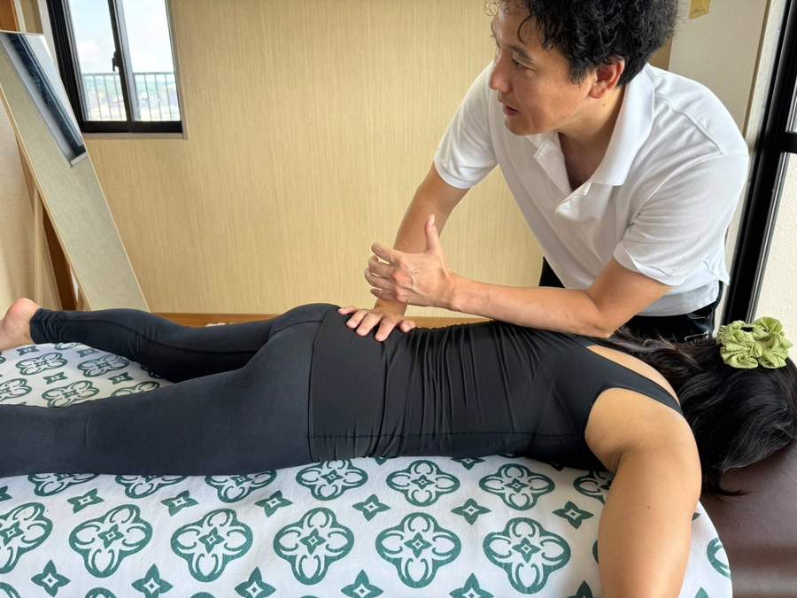
お悩み力任せで、自分の手や腰がつらい
解決体重ののせ方で、力を使わずほぐす
手の置き方と順番で体はゆるみます。小柄な方や体力に自信のない方でも、長く続けられる手技です。
-
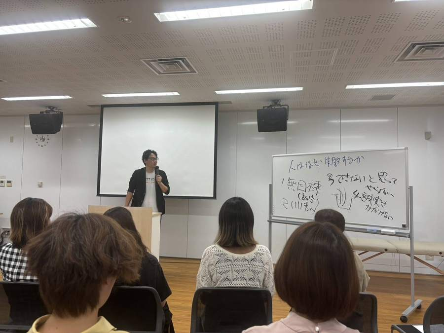
お悩み未経験で、何から学べばいいか分からない
解決専門学校で教えてきた順番どおりに
体の仕組みの座学から、手を動かす実技まで。つまずきやすいところを先に押さえて進みます。
メソッド01
整体ほぐしメソッド
多くの施術者が見落としている指名が増えない理由
ほぐす手技に見立てを足すだけで、施術が説明できるものに変わる
見る×ほぐす×整える＝ 選ばれる施術
実技中心
学ぶのは、手で覚える
現場の手技。
宇野が目の前で手本を見せ、
受講生の手の位置まで確かめます。
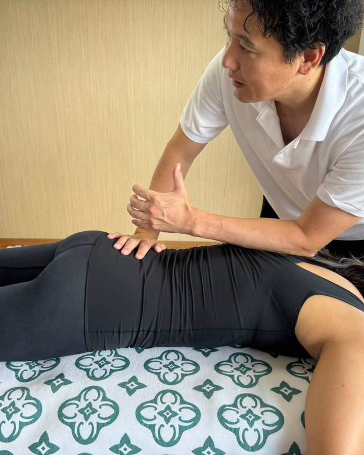
学ぶのは、3つだけ。
- 1
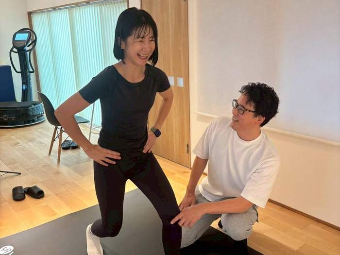
見る
姿勢と動きから
体の癖を読む - 2
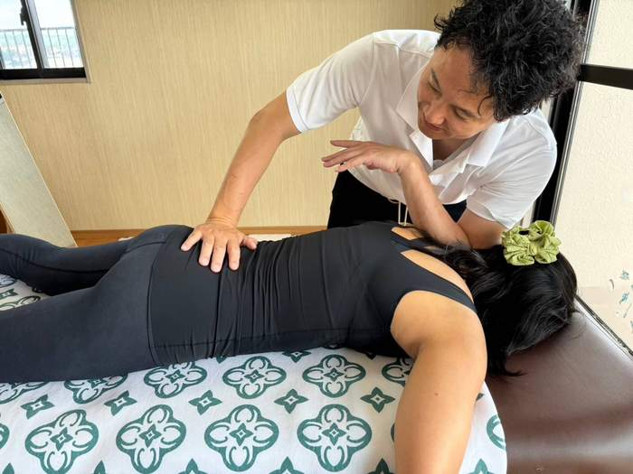
ほぐす
手のあて方と
体重ののせ方 - 3
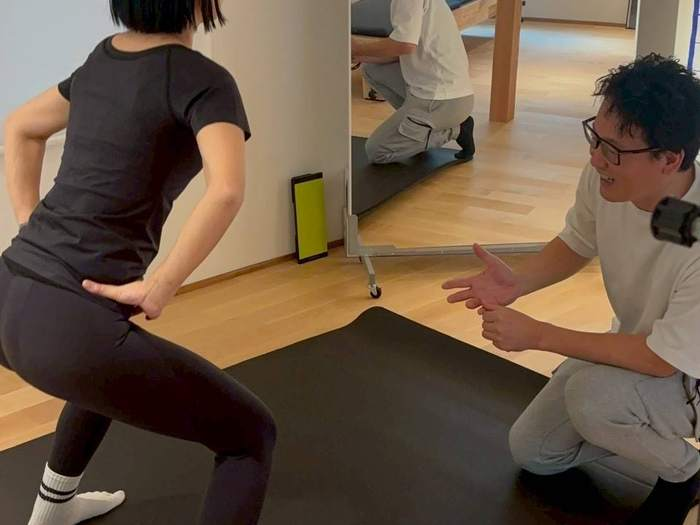
整える
自分で続けられる
体の使い方
一生つかえる手技を、いろはから。
受講について聞いてみる講師02
宇野 清之介
院長歴14年・元 専門学校校長が、
直接教えます。
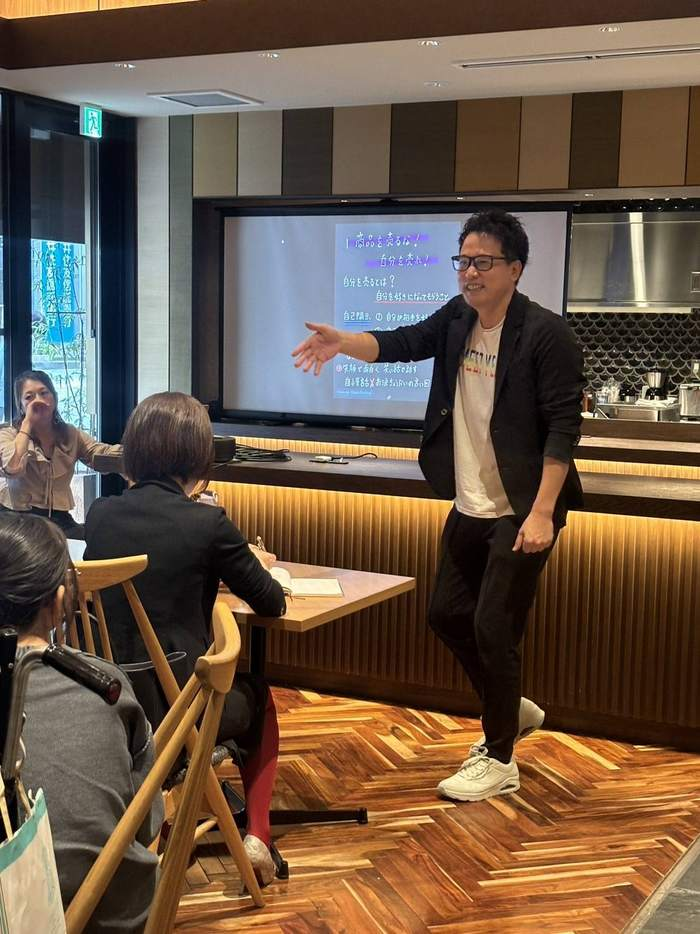
- ケガから始まった、体の学び20代はストリートダンスとカポエイラ。膝を痛めたことをきっかけに、カイロプラクティックを学びました。
- 整体院の院長を14年3か月待ちの整体院に。全国2位の優良店に選出（選出元・年）
- 専門学校の校長として村上学園カイロプラクティックカレッジ金沢校の校長を務め、未経験の学生を育ててきました。
- 自立、つながり、学び技術を身につけた人が、自分の力で働き、人とつながっていける場所をつくっています。
座学と実技と、仲間と
講座の様子を、少しだけ。
体の仕組みを知る座学、手を動かす実技、そして学び合える仲間。
理由がわかる 座学
なぜその手技を使うのか。体の仕組みから理解します。
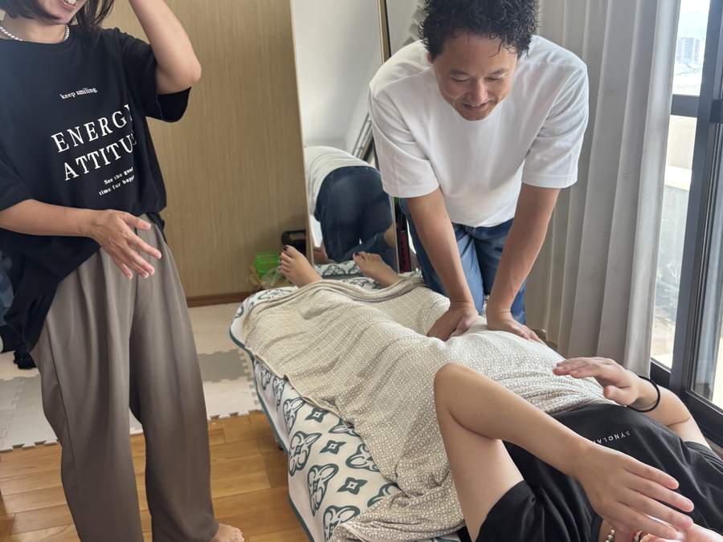
実技
受講生同士で実際に触れて、手の感覚をつかみます。
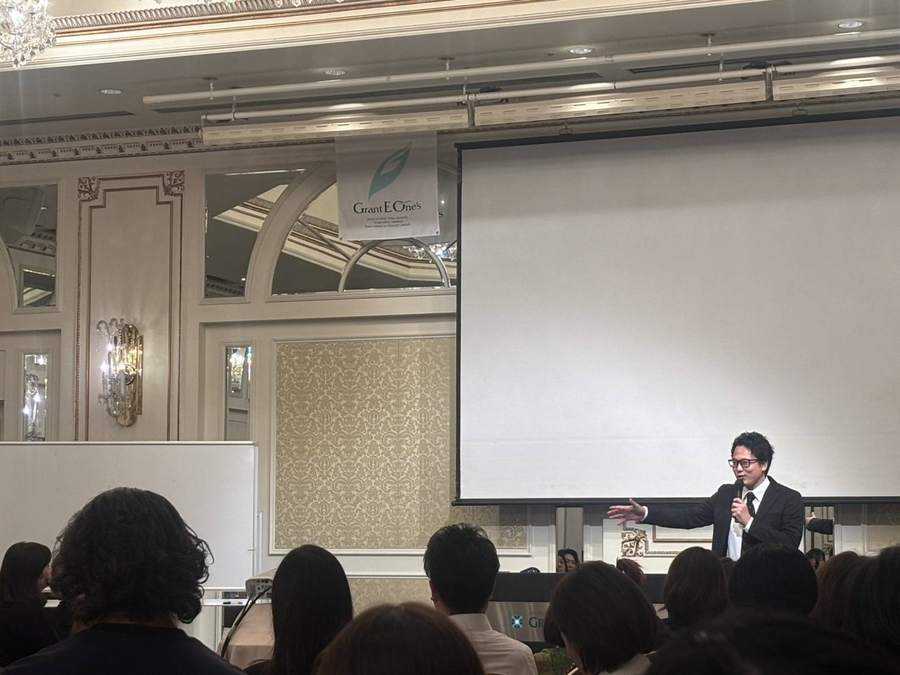
セミナー・交流
サロンオーナーや施術者同士がつながる場もあります。
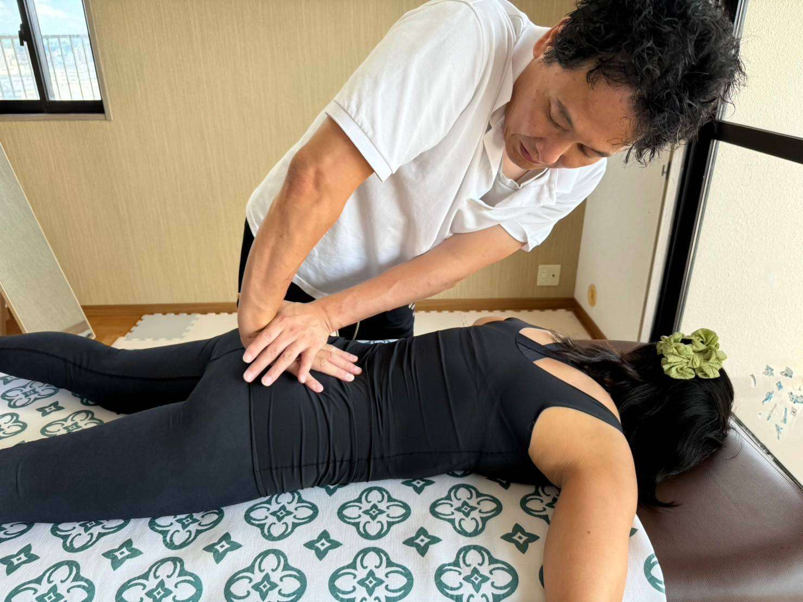
一生つかえる手技を、いろはから。
受講されている方
こんな方が学んでいます
エステシャン
体の土台から見る視点を
リラクゼーション
姿勢まで見られる手技を
整体・整骨
体に負担の少ない手技を
サロンオーナー
メニューと単価を増やしたい
未経験・子育て中
家庭と両立して手に職を
開業予定
技術と運営をまとめて
コース
受講料は、ご相談ください。
ご希望の内容と日程をうかがってから、ご案内します。
基礎コース
未経験の方は、ここから。
ご相談
- 体の仕組みの座学
- 姿勢・骨格の見立て
- ほぐす手技の基本
実践コース
お客さまに提供できるところまで。
ご相談
- 基礎コースのすべて
- 全身の手技の流れ
- 姿勢づくり・セルフケア指導
- お客さまへの説明のしかた
サロン導入コース
今のメニューに組み込みたい方へ。
ご相談
- メニューへの組み込み方
- 料金の決め方
- 開業・運営のご相談
回数・時間・日程は、お一人ずつご相談のうえ決めていきます。
はじめかた
受講までの流れ
- 1LINEでご相談
今のお仕事や、学びたいことを送ってください。
- 2個別にご説明
内容・日程・受講料をご案内します。
- 3受講スタート
座学と実技で、順番に学びます。
- 4修了・現場へ
修了後も、技術や運営のご相談に応じます。
受講前の不安に
よくあるご質問
Qまったくの未経験でも大丈夫ですか？
A大丈夫です。体の見方から順番にお伝えします。専門学校で未経験の学生を教えてきた順番で進めます。
Q力が弱くても施術できますか？
Aできます。力ではなく、手のあて方と体重ののせ方でほぐす手技です。
Qエステやリラクゼーションのサロンでも使えますか？
Aはい。今のメニューに組み込む使い方もお伝えしています。
Q子育て中でも通えますか？
Aご家庭の事情に合わせて、日程をご相談ください。
Q開業の相談もできますか？
Aできます。ホームページ制作や美容商材の仕入れなど、サロン運営のご相談にも応じています。
質問だけでも大丈夫です
学びたいことを、
聞かせてください。
無理な勧誘はいたしません。どんな小さなことでも、お気軽にどうぞ。